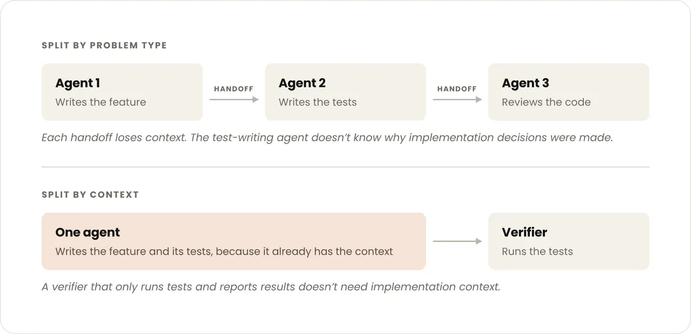

子代理不是組織圖：router、planner 摺回主迴圈的時機
導讀原文：Claude「Building agents」系列——方法論文章，講何時把子代理摺回主 agent 迴圈，附 migration kit 與分階段量測
Claude 應用 AI 團隊的觀察：企業把 router、planner、領域子代理摺回單一主迴圈，改用 skills 漸進揭露——在多家部署的比較裡，品質常更好，成本與延遲常更低。
為什麼會有 orchestrator：失敗模式長什麼樣
企業想要的通常是一個統合多項產品與能力的客戶介面 agent，而每個能力歸不同團隊所有。
起點於是變成：各團隊自建 agent、中央平台團隊在上面蓋一層 orchestrator；或把子代理以 MCP 工具暴露給單一 agent。原文說這看起來最簡單，卻立刻引入複雜度。
另一條常見路徑更像管線：意圖分類器、固定多步推理管線、使用者分群桶、獨立推薦分支，最上面再放多代理 orchestrator。
原文把這層複雜度列成五個失敗模式：context 管理、子代理氾濫、Frankenprompt、過度本地化的 eval，還有延遲。
延遲那項原文給了數字：某客戶比較自家的多代理 harness 與單一迴圈，後者 runtime 約快 2 倍。
這個數字只有單一客戶，原文也未給量測方式與任務組成，不能當通則看。
中央團隊蓋一層 orchestrator，各團隊的子代理各自擁有 context window、工具與指令；或把子代理以 MCP 工具暴露給單一 agent。問題：每多一層轉發，資訊與延遲都變差。
一個清楚的 system prompt、4–5 個薄資料工具、嚴格的輸出護欄。skills 漸進揭露 context、tool search 漸進揭露工具：平時只看短描述，需要才完整載入。
本站重繪（依原文敘述整理）。原文唯一的量化對照在「延遲」失敗模式段，且只是一個客戶的比較：單一迴圈比多代理 harness 的 runtime 約快 2 倍（roughly 2x faster）。品質比較出自 Anthropic 應用 AI 團隊自述（跨多家企業部署），未給部署數與指標定義。子代理＝擁有自己 context window、工具與指令，由 coordinator 編排的 agent。
回饋往往是：這些結構大部分在做「模型已經不需要別人代勞的工作」，一個 prompt 加幾個薄工具就能取代。
原文的比較結論帶限定語：在多家企業部署中，配備 skills 的單一 agent 在品質上頻繁勝過一提示通吃與子代理設計，且常以更低的每任務成本與延遲達成。
反模式也有名字：每個團隊或問題類型各給一個子代理，架構就成了組織圖的複製品——原文稱之為 Conway 定律在 agent 架構上的作用。
決策：什麼時候該 fold，什麼時候該留
原文沒給決策樹，只列了「該用子代理」的條件；反過來讀，就是 fold 的時機。
主 agent 的毛病出在哪裡？
本站整理（編輯推論：原文把「何時 fold」與「子代理何時該用」分散在不同段落，未給此決策樹）。四類非互斥：原文「Use them when」的三條（context 腫脹、平行且可丟棄的 context、工具選不對或指令衝突）與後面「按 context 切」段落重疊——驗證、黑箱驗證兩處都出現，本頁因此併為一類。原文的判準不是要不要用子代理，而是為什麼用。

圖中三棒接力的那條，就是原文說的傳聲遊戲：寫測試的 agent 不知道實作為何這樣決定。
若確定走多代理，原文的順序是反過來的：先從最簡單、可能就夠用的模式起步。
原文點名的起點包括 generator-verifier、orchestrator-subagent，或「其他能用的最簡模式」。
摺疊後的代價是紀律：精心管理的 system prompt、時機剛好的 skill 與工具描述、對 context window、記憶與筆記的刻意處理。
單一迴圈還有個終局好處：agent 學到的東西都留在同一個 context，這正是許多團隊想要的「懂使用者高層目標、能代其行動」。
怎麼搬：先建量尺，再分階段量對的東西
| 階段 | 量什麼 | 原文限定語 |
|---|---|---|
| 起步 | 用 rubric 評 agent 的最終回覆，追蹤回答品質 | 原文稱之為「好的起點」，不是終點 |
| 還有 orchestrator | routing accuracy：有沒有選對子代理 | 只在 orchestrator 還在時量得到 |
| 子代理摺入後 | 有沒有載入正確的 skill、呼叫正確的工具 | 取代 routing accuracy 的檢查點 |
| 長期 | task-completion eval：任務有沒有真的完成 | 原文：比較不同架構時，這最有分量 |
| eval set 結構 | 中央團隊一套共享端到端集合＋各 skill 隨附小集合 | 即使只有 10 個黃金範例，也足以開始 |
→ 可橫向滑動
表為本站整理；四列指標依原文敘述順序排列，原文未給此表。
量測本身是工程題：內部系統難以重放、使用者互動難以模擬。原文分享的內部做法之一，是記錄時間戳。
組織也要一起搬：一個中央團隊掌握端到端品質與 system prompt，每個新工具與 eval 上線前都要審核。
團隊保持小規模，迭代才快、跨部門協調成本才低——這是原文對大型組織的具體建議。
配套工具：migration kit。引導式工作流，走三步——辨識你的架構模式、評估替代方案、驗證最佳做法；內附 demo，可先在 mock 系統上演練，確認無虞再套到真實 agent。
帶走三件事
先問這段結構還在做模型的工作嗎。是，就 fold，換 prompt＋薄工具＋護欄。
子代理留給驗證、平行、權限。要拆就按 context 切，不按團隊切。
沒有 eval 就別搬。10 筆黃金範例＋rubric 就能起步（編輯觀點）。
同一主題的其他館藏
導讀為本站編輯內容（AI 摘解自官方原文與館藏重點，非官方文件）；引述說法均出自原文，圖解 A／B 與小標為本站重繪與編輯整理。原文另有三張示意圖：靜態一張（按問題類型切 vs 按 context 切）已收錄於本頁，兩張動態 gif 未收錄。內容經對照原文的獨立事實審查後發布。